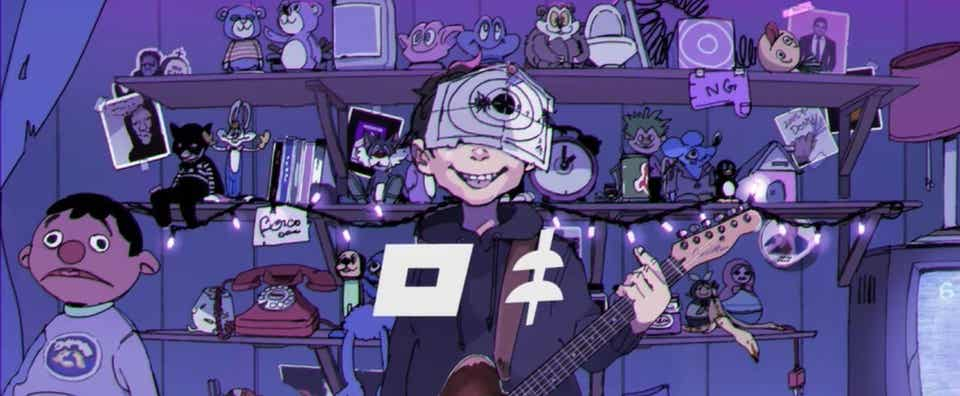
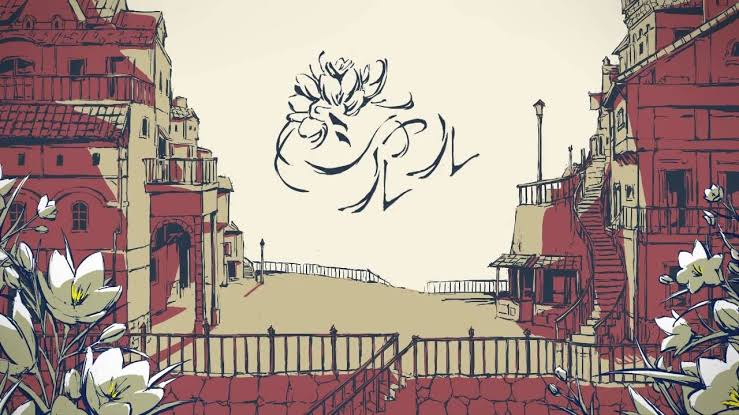
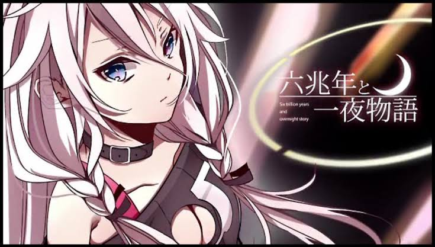
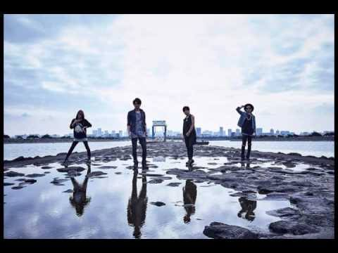

私が一番好きな曲は『ロキ』です。この曲は、みきとPが作曲でVOCALOIDの鏡音リンが歌うロックな曲です。この曲を使ってMMDなどを作った曲をよく聞いてます。

私が次によく聞く曲は『シャルル』です。この曲は、バルーンが作曲です。この曲はサビのところで高音があるので、歌うのには結構大変ですけど、聴くにはとっても楽しい曲です。

この曲は『六兆年と一夜物語』という曲です。この曲は、物語が分かるような曲です。ノベル化もしています。

この曲はアニメデュエルマスターズVSRFのエンディング曲です。この曲は、But by Fallが歌っています。この曲のリズムがすきです。